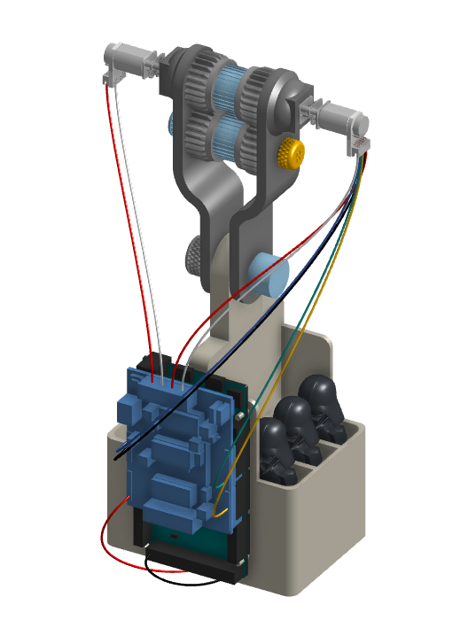
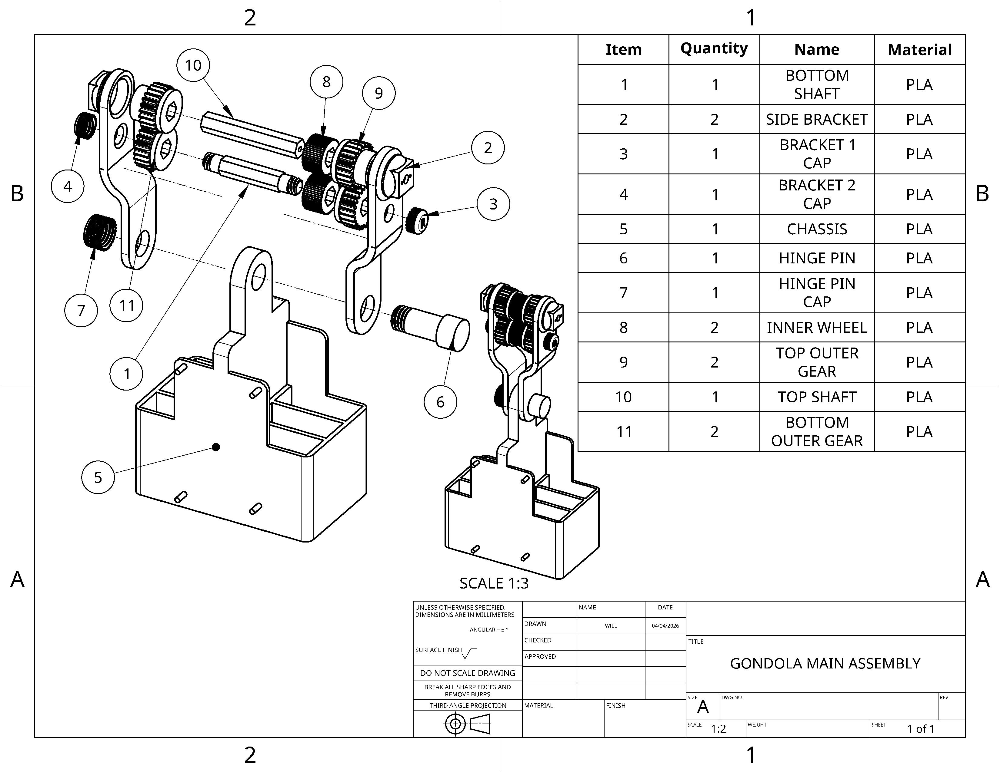
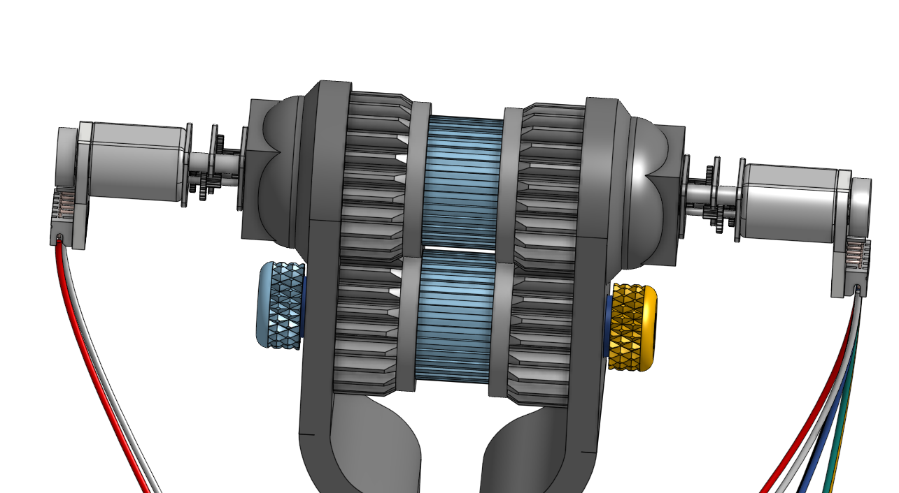
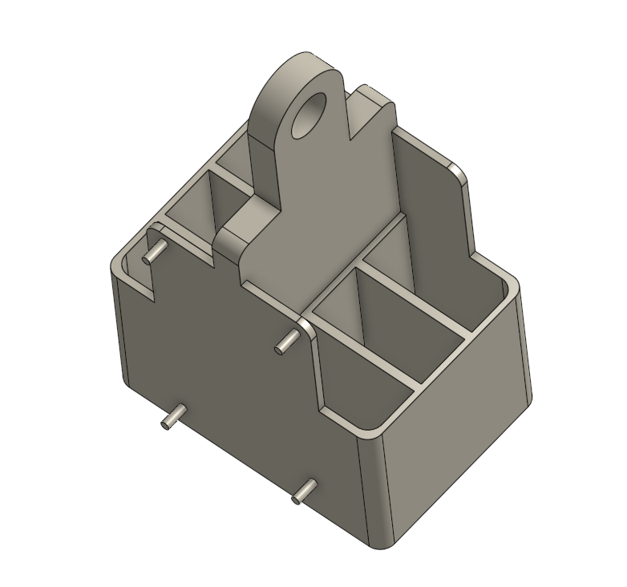
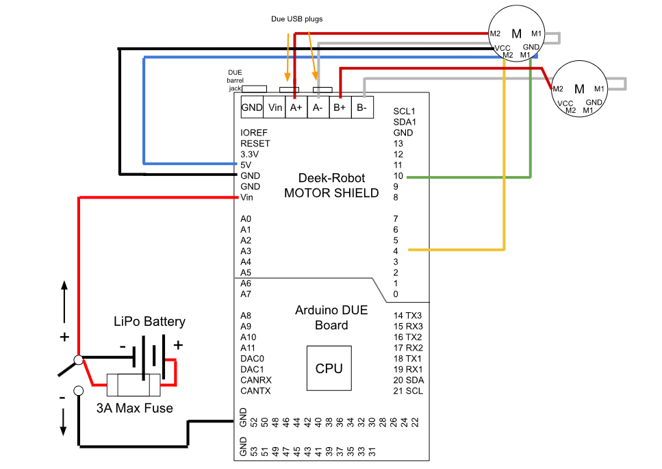

Autonomous Open-Air Gondola
Overview
This project involved the design and prototyping of an autonomous open-air gondola carriage system capable of traversing a suspended rope track at a 30° angle. The system integrates mechanical, electrical, and control components using an Arduino Due microcontroller. The gondola was programmed to travel along the rope, perform designated stopping actions, and return to its starting position completely autonomously while maintaining stability during both the ascending and descending pahse.
Key Design Highlights
- Dual-Motor Clamping Mechanism: Implemented a rigid two-wheel gear-driven mechanism with internal ridges (teeth) to maintain consistent compression on the rope, eliminating traction issues and preventing the Gondola from sliding down the rope when no power is applied to the motors.
- Encoder-Based Odometry: Replaced external sensors with an open-loop kinematic algorithm that tracks encoder pulses to calculate exact distances for precise stops and direction reversals.
- Egg-Carton Chassis: Designed a compartmented, low-center-of-gravity chassis that safely secures passengers while preventing lateral rotation and oscillation around the rope.
- Optimized Power System: Upgraded from a high-resistance 9V battery setup to a single 7.4V LiPo battery, cutting power supply weight by 77% while providing sufficient current to prevent motor stalling on inclines.
- Design for Manufacturing: Utilized 3D-printed PLA with modular geometry limited to 45-60° overhangs to minimize supports, and strategically used 100% infill for shafts to resist torsional shear forces.
Technical Specifications
| Microcontroller | Arduino Due |
|---|---|
| Motor Controller | Deek-Robot L298P Motor Shield |
| Actuators | 2x FIT0485 Geared Motors with Encoders |
| Power Source | 900 mAh 2S 30C LiPo Battery (7.4V) |
| Max Load Capacity | 0.454 kg (including passengers and components) |
| Performance (30° Incline) | Completed full round trip autonomously in 53 seconds |
| Material | 3D Printed PLA (15% Gyroid infill body, 100% infill shafts) |
Gallery



